在手动操作模式下按
| iTNC530数控系统及面板介绍 |
如下图所示：MDI系统标准HEIDENHAIN面板
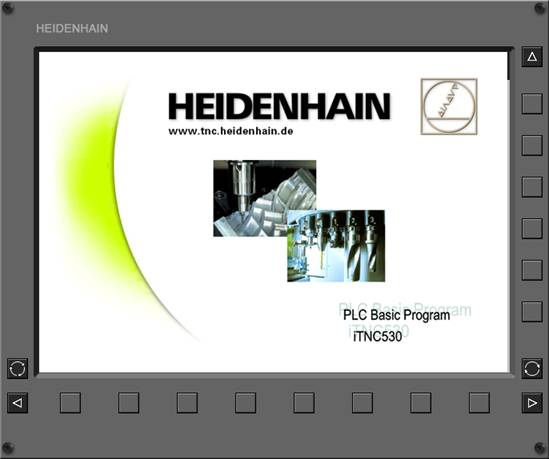
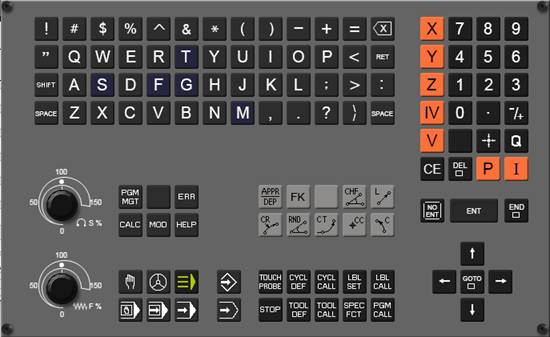
机床操作面板
如下图所示：HEIDENHAIN标准操作面板
数字 / 字母键用于输入数据到输入区（如下图所示），系统自动判别取字母还是取数字。
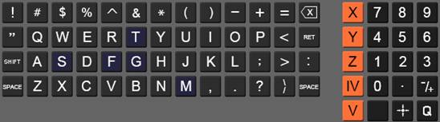
切换加工模式和编辑模式。
手动操作模式。
电子手轮。
MDI模式。
程序运行-单程序段。
程序运行-全自动。
程序编辑。
测试运行。
程序文件管理。
清除数字输入或清除TNC出错信息。
中断对话，删除程序块。
忽略对话提问，删除字。
确认输入信息并继续进行对话。
结束程序段，退出输入。
跳转键。
正负符号键。
删除字符键。
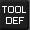
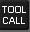
定义循环。
调用循环。
接近离开轮廓编程。
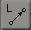
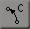
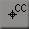
已知半径圆编程。
相切圆弧编程。
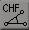
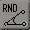
主轴倍率。
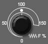
手动操作虚拟数控机床
开关机
操作步骤：
打开机床电源开关，释放急停按钮，之后打开。关机在手动模式下按键，按
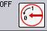
菜单，点菜单即可关闭系统，重新启动系统按键。回参考点
在手动操作模式下按 ，按
，按
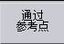
菜单，再按循环启动键进行回参考点，按一次循环启动回一个轴，按照Z、X、Y的顺序进行。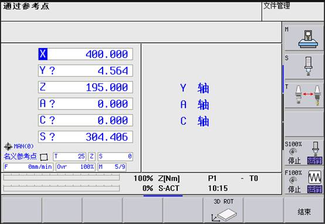
“手动操作”运行方式 (“加工”操作区)
功能
在手动操作运行方式中,可以使坐标轴点动运行。
操作步骤
选择手动操作运行方式
操作相应的方向键可以使坐标轴运行。如果按动相应的快速键，则坐标轴以快进速度运行。
在选择“增量选择”以步进增量方式运行时，先按键，再按
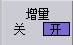
菜单，坐标轴以增量行使，步进量在屏幕上显示。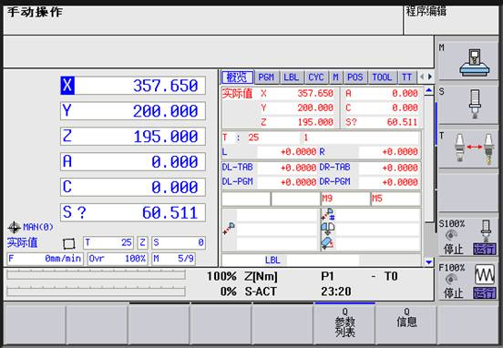
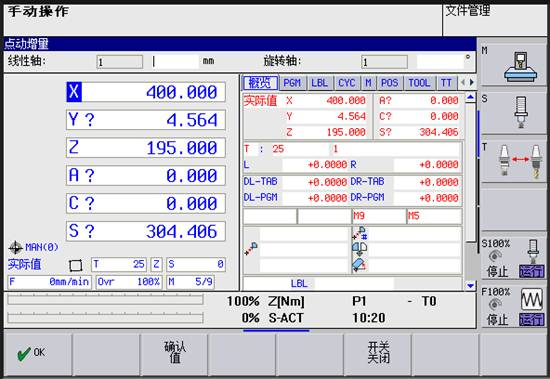
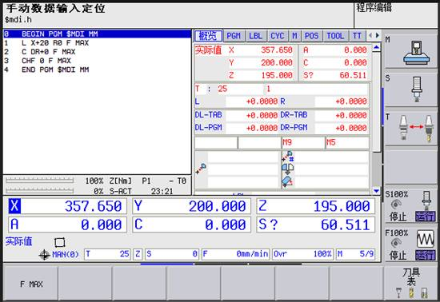
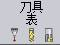
菜单。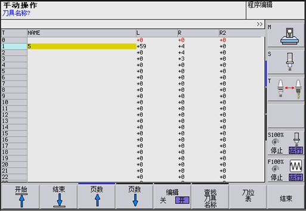
预设表
操作步骤
1、设置原点
在手动操作模式下，按 键，再按菜单，选择、、菜单，输入设置的原点数据，点菜单。
键，再按菜单，选择、、菜单，输入设置的原点数据，点菜单。
当前处于状态，预设表中可以查看到对应的。
2、设置预设表
在手动操作模式下，按键，再按
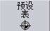
菜单，点“改变预设”菜单进行、、、设置所需要的数据。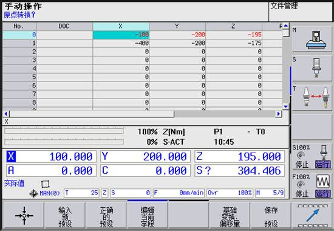
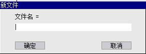
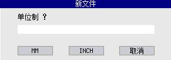
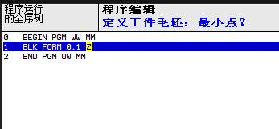
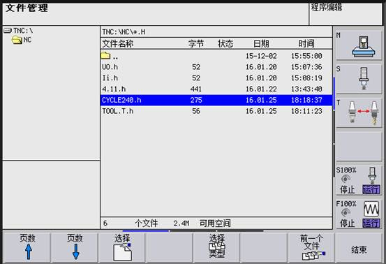
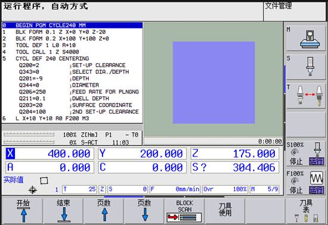